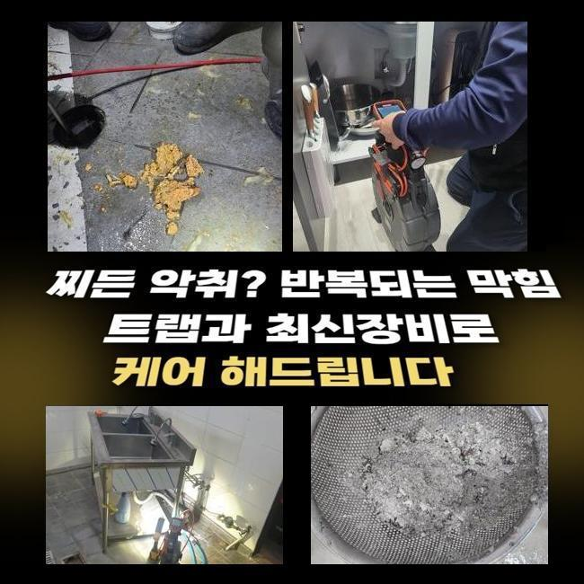
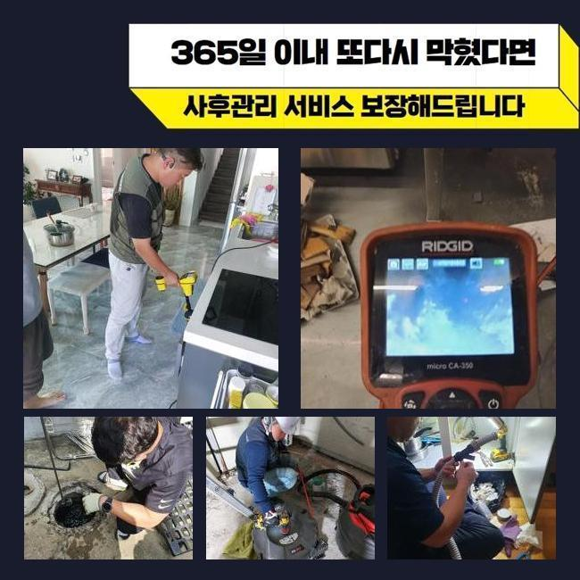
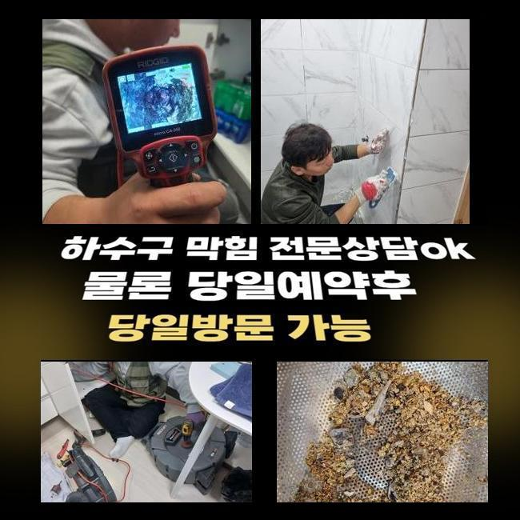
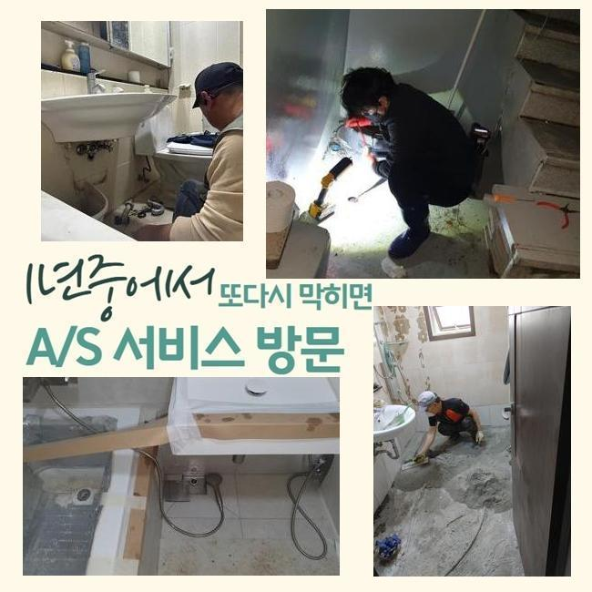
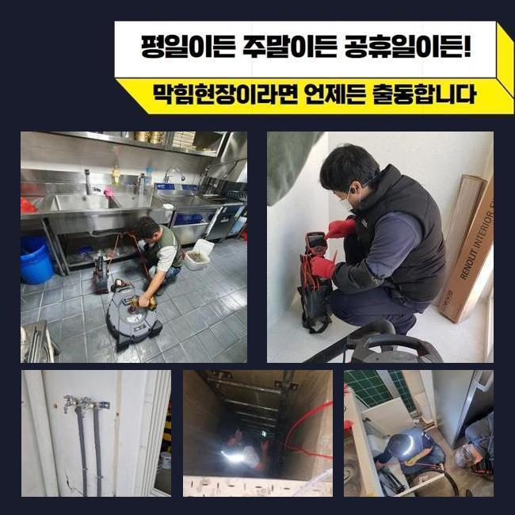
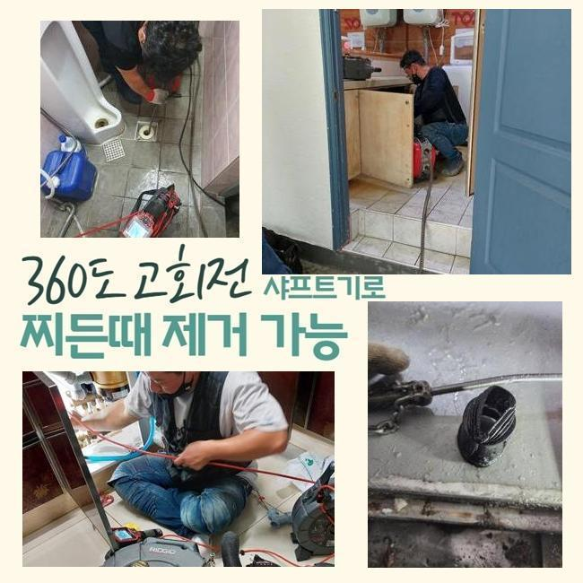

🏠 성남 태평동세탁실역류 위례동 고압세척비용 설비공사
성남 하수구막힘 전문 시공 후기

📋 작업 개요
- 위치: 성남
- 서비스 유형: 하수구막힘, 배관막힘, 역류해결, 뚫는업체, 배관청소, 고압세척, 설비공사, 악취차단
- 작업 일시: 2025. 3. 8. 16:52
- 업체명: 하수구수사대 (010-5615-2118)
🔍 문제 상황
성남 태평동세탁실역류 위례동 고압세척비용 설비공사
저희팀은 배수시설과 관련한 여러종류의 작업을 처리하는 회사입니다
전문가가 상시로 대기하여 의뢰인께서 부닥치신 트러블에 바로바로 응대해드린답니다
금번에는 주방배관막힘 처치 과정을 말씀드리도록 할게요
이번주 초에 의뢰를 해주셨던 위치는 복합상가입니다
영업장의 하수구가 차단되었고 거기에 더해 화장실배수까지 안되는 형국이었답니다
근방에서 근무중이었던 직원이 바로 이동하였으며 알맞은 방책을 수행하기로 하였답니다
주방배수구 정체와 화장실공간의 고장이 일어난 위치는 닭요리를 전문으로 하는 곳이었죠
주방시설에서는 여러 음식재료를 처리하기에 배수관정체가 흔히 생기죠
이래서 식당주인분들을 그에 대한 여러 방법들을 모색하시곤 하는데요
평상시에 청결하게 사용하였더라도 급작스레 큼직한 음식찌꺼기가 들어간다면 체증이 일어나기 쉬우므로 조심해야 해요
금번 소개드릴곳은 어떤 원인으로 정체가 발현된건지 빈틈없이 점검해보겠습니다
일단 주방설비부터 파악하기로 합니다
한식집은 일반 가정의 배수시설과는 상이한 모습을 띠며 트렌치설비의 크기도 굉장히 큰데요

🔎 원인 분석
💡 전문가 진단: 정밀 진단 장비를 사용하여 슬러지의 고착 여부를 판명하고 타격/세척 작업을 실시했습니다.
그렇기에 유입되는 배수량도 많아질 수밖에 없는데요
그러므로 일반 가정의 배수성능 기준으로 이상여부를 결단하여선 곤란하며 그것에 적합한 물의양을 넣어서 상태를 정밀하게 알아보는 것이 필요한겁니다
이렇게 배수테스트를 안하고 대충 넘어간다면 얼마가지 못하여서 막힘현상이 재발하기 쉽습니다
배수기능을 확인하였고 원활하게 배수처리가 이어지지 않는단 정황을 파악하게 되었죠
느릿느릿 빠져버리기는 하였지만 식당운영을 재개하기엔 어려운 상황이었답니다
그후에 배수관 속으로 배관카메라를 투입하여 분명하게 정황을 확인해보기로 했죠
기름찌꺼기들과 미세한 석회잔재들이 가득한 형국이었죠
파이프속에 흘러가면 안 되는 성분들이 쌓여서 고장을 일으킨거죠
이것들과 연관된 배수관에 투입돼면 문제가 될것들에 대하여 안내해 드릴게요
설명하는 것들을 메모해두셨다가 평상시에 이를 적용해볼것을 추천합니다
기름슬러지가 차가운물과 만나게되면 굳어지고 때문에 하수관에 달라붙을 확률이 크죠
그렇기 때문에 반드시 주방용 휴지로 소제한후에 물세정을 하는것이 중요하죠
또 기름성분을 분리해서 수거하는 통도 습관적으로 활용하는게 합당합니다
매장에 구비해두시는 원두커피에서 발생되는 가루들도 하수도막힘을 일으킬수 있고요
커피가루는 기름과 결합하는 특성이 있어 관로내부에서 엉기기 쉽죠

🔧 작업 과정
그렇기에 일반쓰레기로 분류하여 처분하는게 바람직해요
설거지 과정에서 그릇에 잔류하는 음식물을 주방의 배수관으로 폐기한다면 배수관 측면에 눌어붙을 여지가 있어요
조미성분은 부피가 미세하기에 거름망을 지나쳐 관로로 들어갈수 있으므로 분리해서 처리하는게 마땅합니다
메뉴를 조리하시다가 생겨난 전분가루 등도 주방설비에 곧바로 폐기한다면 응축되어서 물막힘이 유발될수 있죠
그러하기에 이러한 것들은 필수적으로 개별처리하여서 배수시설물을 청결하게 보존해나가시길 당부드립니다
내시경기기를 활용하여 깊은층까지 검사해보았더니 공동관도 트러블이 일어났을거라 예측되었고 추가점검을 해보기로 합니다
우선적으로 문의하신 분의 음식점의 배수관 세척을 해야하겠죠
백숙을 끓이는 장소다보니 타시설물과 다르게 기름성분이 다량으로 누증된 상태였고 또다른 잔재들과도 엉켜서 혼잡한 상태였습니다
이상황이 오래 지속되며 배수관면에 고착화된 형국이었죠
분쇄기기를 써서 주방시설의 초기 세척작업을 시행하기로 했습니다
부품들은 배관의 특성에 맞게끔 교체할때도 있으나 통상 쇠로 가공된 노커를 이용하는데요
기다란 노즐부에 해당하는 관통헤드가 결합돼있고 배수관에 밀어넣은뒤에 가동하면 고속회전을 하면서 잔류하는 배관이물들을 파쇄시키는 수리를 수행하죠
보편적으로 분쇄기를 가동시키면 이물제거는 큰 문제없이 진행됩니다
그렇지만 앞서서 안내해 드린바대로 이건물은 중앙관로가 막혔다는 사실을 간파한바가 있답니다
그렇다면 개별하수관의 세정만으로 본질적인 막힘이 소멸될리 만무합니다
뚫린걸로 오인이 일어나기도 하지만 중앙의 배관이 차단되었다면 몇달 가지 않아서 재차 배수관이 막히게 된답니다
개별배관 청소를 마무리한뒤 지하에 자리잡은 공용관을 진단해 주었답니다
배관내시경을 밀어넣었더니 두텁게 누증된 녹황색의 노폐물들이 가득하였답니다
긴시간 퇴적을 이룬것으로 생각되었고 면적도 넓다보니 누적량이 많아진거죠
이부분을 고압물청소를 통하여 처리하기로 결정내렸으며 2시간가까이 세정을 진행하였어요
메인관까지 스케일링 시공을 하고나서 의뢰자의 음식점으로 건너가서 하수관 점검과 화장실까지 검점을 수행하였더니 정말 깔끔하게 뚫음이 이루어져서 시원하게 빠져나갔답니다
본현장은 막대한 유분찌꺼기와 식재료 잔재들이 막힘의 사유라 볼수 있었고 지하주차장의 횡주관로까지 막혀있었기에 더더욱 사태가 심중했답니다
해당 문제를 분쇄기기와 물세척공정으로 짜임새있게 처치하였으며 시원하게 뚫린 상황을 마주할수 있었어요
공정을 끝마치고 생활중에 발발가능한 막힘상황들과 숙지해두면 유용한 하수도관리 절차등을 안내해 드렸답니다


✅ 작업 완료
해당내용에 대해 추가적 궁금증이 있으셔서 꼼꼼하게 다시금 설명드렸죠
공사를 어설프게 이행한다면 추후 관로에 상당한 문제점이 생겨날수 있답니다
그러하기에 정확한 시공방식을 접목시켜 해결해내려는 스탠스가 중요합니다
따라서 여러가지의 장비들을 기반으로 수리를 수행하여야 한다는걸 말씀드립니다
식당 등에서 급작스레 배수관정체가 생겨난다면 정상적인 운영이 어려운 상황에 봉착하겠죠
따라서 약간이라도 문제점이 목격되었다면 방관하지말고 배관전문업체에 의뢰하시길 바라요




⚠️ 하수구 배관 막힘 예방 및 관리 가이드
- ✅ 머리카락, 비닐, 물티슈 등 물에 분해되지 않는 이물질은 하수구 유입을 절대 금지해 주세요.
- ✅ 하수구 거름망을 씌우고 모여진 이물질은 주기적으로 쓰레기통에 바로 비워주셔야 합니다.
- ✅ 배관 노후가 심할 경우 이물질이 더 쉽게 걸리므로 주기적인 배관 세척(고압세척 등)을 권장합니다.
- ✅ 작업 후 1년 이내 재발 시 하수구수사대에서 무상 A/S 보증 서비스를 제공합니다.
💡 핵심 정리
- 확실한 장비 작업(내시경 점검 및 샤프트 스케일링)으로 원인을 뿌리 뽑습니다.
- 작업 후 1년 이내에 동일한 부위 재발 시 100% 무상 A/S 서비스를 보장합니다.
- 서울 · 경기 · 인천 전 지역에 24시간 언제든 긴급 출동할 수 있도록 항시 대기 중입니다.
❓ 자주 묻는 질문 (FAQ)
🚨 성남 하수구막힘 문제로 고민이신가요?
정확한 원인 진단과 확실한 시공으로 재발 없는 해결을 약속드립니다.
24시간 긴급 출동 | 서울 · 경기 · 인천 전지역 | 1년 내 재발 시 무상 A/S